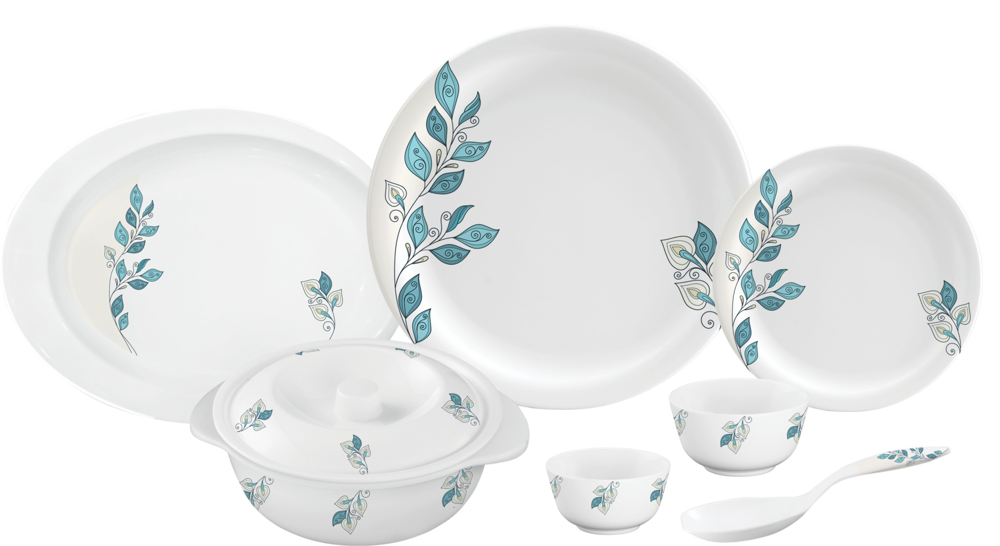
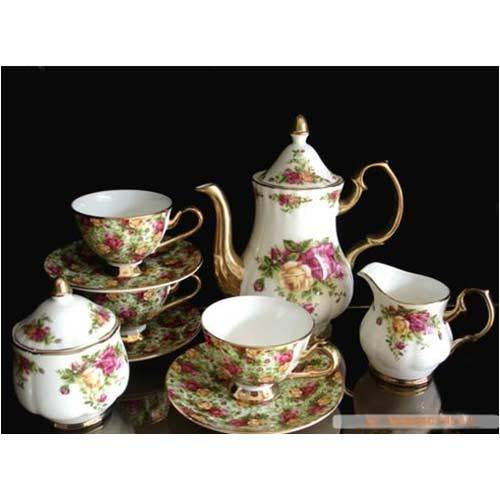
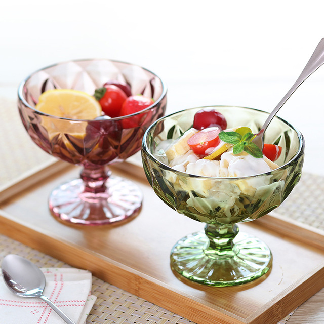

Everyone want to arrange their living room, kitchen and a roofed platform along the outside of a house etc with different types of things. In that case, you can use glasswares and crockeries to beautify your rooms. From tumblers to champagne flutes, glassware is used to serve water, cocktails, beer, liquor, wine, coffee, tea, icecream and other beverages and also used for photo frames,candle stand, table lamps With a wide variety of sizes and shapes, each one has a purpose.Common barware include the following:Stemware is a type of glassware that sits on a base and is typically used for formal family gatherings and holidays; the most well-known is the wine glass. Other types include the following: Claret glass, Bordeaux glass, Cocktail glass, Cordial glass, Sherbet glass, Chalice, Goblet (often used for water). Red wine is typically served in stemware that has a wide, open bowl, and white wine is served in stemware with a narrower bowl. There are many different kinds of laboratory glassware items: Examples of glassware containers include: Beakers are simple cylindrical shaped containers used to hold reagents or samples. Flasks are narrow-necked glass containers, typically conical or spherical, used in a laboratory to hold reagents or samples. Crockeries has different types such as Dinner set, coffee mug, showpieces, flower vases etc.

In the Crockeries section, you can find different types of designer dinner sets, breakfast kits, bowls, coffee mug etc. Most were in fact used for holding or serving liquids, and many would more naturally be called cups, jugs and so on.

Ice cream bowl sets, cup sets, dessert bowls, spoons are made of glasses, ceramics etc. You can find various types of designer bowls.
